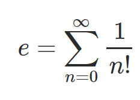

rational magnitude in action
This page delves deeper into the operational character of this current implementation for FastRationals.
We use the leading terms of this series as an investigative tool, a metaphorical flashlight that works.
| the series formulation | |
|---|---|
|  | the source code here paints an informative picture. |